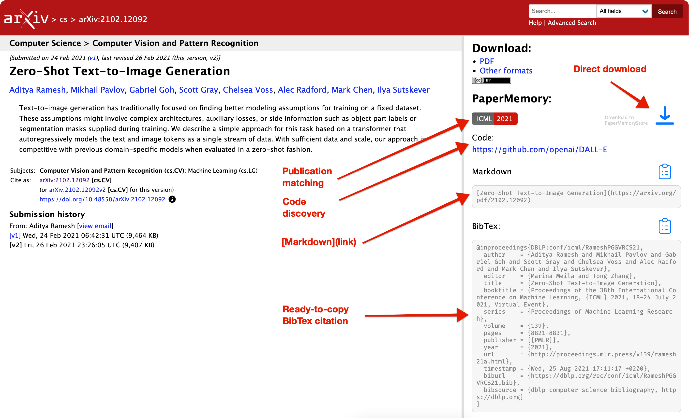

Features¶
User Guides¶


Keyboard Navigation¶
Arxiv Enhancements¶
PaperMemory enhances paper pages on ArXiv.org to make its parsing abilities readily available without even opening the popup:
- Displays the publication venue if one exists
- Allows you to directly download a paper to your PaperMemoryStore

Memory: Parsing papers¶
Venues¶
In order to parse papers from the websites you visit, PaperMemory contains a custom function for each individual paper provider (ArXiv, ScienceDirect, OpenReview, Nature, Science, FrontiersIn, etc.).
Whenever possible, PaperMemory queries the API the provider offers. If they don't offer an open and free API, PaperMemory will parse the page's HTML code. When on a PDF's page, PaperMemory contains an URL reversal process to go from PDF to Abstract page. If that cannot be infered from the URL because of the paper provider's URL scheme, there's nothing PaperMemory can do and the PDF will not be stored.(1)
- PDFs are notoriously hard to parse as stand-alone files, so PaperMemory cannot (currently) extract metadata from the raw file. This feature has a low priority and would require a PR to move forward.
PaperMemory known venues
- Arxiv
- PaperMemory will try to find if a pre-print has been published and create a corresponding
noteto the paper (see preprints) - Also detects and matches papers from huggingface.co/papers, AlphaXiv, ar5iv.org and scirate.com/
- BioRxiv
- NeurIPS
- Open Review (ICLR etc.)
- Computer Vision Foundation (I/ECCV, CVPR etc.)
- Proceedings of Machine Learning Research (PMLR) (AISTATS, ICML, CoRL, CoLT, ALT, UAI etc.)
- Association for Computational Linguistics (ACL) (EMNLP, ACL, CoNLL, NAACL etc.)
- Proceedings of the National Academy of Sciences (PNAS)
- SciRate
- Nature (Nature, Nature Communications, Nature Machine Intelligence etc.)
- American Chemical Society (ACS)
- IOPscience
- PubMed Central
- International Joint Conferences on Artificial Intelligence (IJCAI)
- Association for Computing Machinery (ACM)
- IEEE
- Springer (books, chapters and, of course, articles)
- American Physical Society (APS)
- Wiley (Advanced Materials, InfoMat etc.)
- Science Direct
- Science (Science, Science Immunology, Science Robotics etc.)
- FrontiersIn (Frontiers in Neuroscience, Frontiers in Neuroscience, Frontiers in Microbiology etc.)
- PLOS
- Royal Society of Chemistry
- MDPI
- Oxford University Press
- HAL Archives ouvertes
- Sci-Hub
- Add more
Code repositories¶
PaperMemory uses Papers With Code's API to discover code repositories for your paper.
By default, PaperMemory only stores official code repositories. You can configure that (and a preferred framework) in the Advanced Options.
How it works
PaperMemory uses the PapersWithCode API in order to discover code repositories. If the paper being added to the Memory is from Arxiv, PaperMemory will use PWC's arxiv_id search field. Otherwise it will query per title. PaperMemory then expects exactly 1 result from the API. Any different count in the response will make PaperMemory consider there is no match.
If a match is found, the selected repo is the official (if it exists) one with the most stars (customizable in the Advanced Options).
Here's an example return value from PWC's API
"https://paperswithcode.com/api/v1/papers/?title=climategan"
{
"count": 1,
"next": null,
"previous": null,
"results": [
{
"id": "climategan-raising-climate-change-awareness",
"arxiv_id": "2110.02871",
"nips_id": null,
"url_abs": "https://arxiv.org/abs/2110.02871v1",
"url_pdf": "https://arxiv.org/pdf/2110.02871v1.pdf",
"title": "ClimateGAN: Raising Climate Change Awareness by Generating Images of Floods",
"abstract": "...",
"authors": ["..."],
"published": "2021-10-06",
"conference": "climategan-raising-climate-change-awareness-1",
"conference_url_abs": "https://openreview.net/forum?id=EZNOb_uNpJk",
"conference_url_pdf": "https://openreview.net/pdf?id=EZNOb_uNpJk",
"proceeding": "iclr-2022-4"
}
]
}
"https://paperswithcode.com/api/v1/papers/climategan-raising-climate-change-awareness/repositories/"
{
"count": 2,
"next": null,
"previous": null,
"results": [
{
"url": "https://github.com/cc-ai/climategan",
"owner": "cc-ai",
"name": "climategan",
"description": "Code and pre-trained model for the algorithm generating visualisations of 3 climate change related events: floods, wildfires and smog. ",
"stars": 25,
"framework": "pytorch",
"is_official": true
},
{
"url": "https://github.com/cc-ai/mila-simulated-floods",
"owner": "cc-ai",
"name": "mila-simulated-floods",
"description": "",
"stars": 7,
"framework": "pytorch",
"is_official": true
}
]
}
Searching¶
You can search for (partial) terms:
- In a paper's authors, title and note.
- Split queries on spaces:
gan imwill look for: all papers whose (title OR author) contain ("gan" AND "im")
- Split queries on spaces:
- In a paper's code link
- Start the search query with
c:to only search code links
- Start the search query with
- Paper years
- Start the search query with
y: ${year}, optionally with,separating requested years or starting with>or<to filter paper published after/before a given year (stricly)y: 20,21,22will display papers published in2020 OR 2021 OR 2022y: <2015will display papers published before (strictly)2015y: >19will display papers published after (strictly)2019
- Start the search query with
- Paper tags
- Start the search query with
t:to filter by tags t: ganwill look for all papers whose tag-list contains at least 1 tag containing "gan"t: gan timwill look for all papers whose tag-list contains (at least 1 tag containing "gan") AND (at least 1 tag containing "tim")
- Start the search query with
Preprint matching¶
There currently exists, to my knowledge, no centralized source for matching a preprint to its subsequent published article. This makes it really hard to try and implement best practices in terms of citing published papers rather than their preprint.
My approach with PaperMemory is to try and notify you that a publication likely exists by utilizing the note field. You will occasionally notice Accepted @ X in a Paper's notes. This will be added automatically if you are on a known published venue's website (as Nature, PMLR or NeurIPS) but also from PapersWithCode, DBLP.org SemanticScholar.org, CrossRef.org and Unpaywall.org.
How it works
Here's an overview of jhow PaprMemory deals with publication APIs:
-
- A query is sent to their api from an Arxiv ID or a paper's plain text title if it's not an Arxiv paper
- As PaperMemory retrieves code, it also looks for a
proceedingfield in PWC's response. - If it exists and is not
nullthen it is expected to look like${conf}-${year}-${month}. - In this case a note is added to the paper:
Accepted @ ${conf} ${year} -- [paperswithcode.com]
-
- A query is sent to their api for an exact paper title match
- The oldest
hitin the response which is not a preprint (hit.venue !== "CoRR") is used -
If such a match is found, a note is added as:
Accepted @ ${venue} ${year} -- [dblp.org]- In this case, the original Arxiv bibtex data is overwritten to use DBLP's
- Try for instance Domain-Adversarial Training of Neural Networks
- Note that DBLP journals may use ISO4 abbreviations
-
- A query is sent to their api for an exact paper title match
- Up to 50 relevant papers are returned in
response.dataas anArray - In case of a match, the venue should not be
"ArXiv" - If there's a match and its venue is not Arxiv then
match.venueandmatch.yearare used to create a note:Accepted @ {venue} ({year}) -- [semanticscholar.org]
-
- A query is sent to their api for an exact paper title match
- The response must contain an
eventfield with anameattribute. If it does not it'll be ignored. -
If it does, a note is added as:
Accepted @ ${items.event.name} -- [crossref.org]
-
- A query is sent to their api searching for papers
- Amongst
response.results, we're looking for an exact title match. - If there's one, a to the paper note is added as:
Accepted @ ${result.journal_name} -- [unpaywall.org]
There's room for improvement here^, please contact me (an issue will do) if you want to help
Parsing arbitrary websites¶

PaperMemory allows you to parse any website, such as blog posts, PDFs hosted on personal websites, documentations etc.
Just hit the Parse Current Website button and adjust the automatically-filled fields.
A website will be exported as a BibTex entry like:
@misc{wolfe2023history,
author = {Cameron Wolfe},
title = {The History of Open-Source LLMs: Early Days (Part One)},
year = {2023},
url = {https://cameronrwolfe.substack.com/p/the-history-of-open-source-llms-early},
note = {Accessed 2023-11-20},
}
Bibliography tools¶
- Copy the BibTex entry of the current paper from the Popup or any paper in your Memory by clicking the icon
- Export all papers with a given tag into a
.bibfile in the Advanced Options. - Match the ArXiv pre-prints of an existing
.bibfile to actual publications with PaperMemory's BibMatcher
Local File Storage¶
PaperMemory can store pdfs in your Downloads folder and use this file instead of re-downloading a pdf from the internet.
How it works:
- Enable the feature from the Popup Menu
- Click on the Download button in the PaperMemory popup when reading a paper
- The extension creates a
PaperMemoryStore/folder in yourDownloads/ - PDFs are stored in there
- When opening a paper from your Memory, if it is not already open in a tab, the extension will open a new tab (or your PDF reader, the Browser decides) to the local file instead of the paper's online pdf
Limitations:
- PaperMemory can only access folders in your Downloads so the storage has to happen there
- It relies on title matching to 1/ Open a local file from the Memory 2/ Detect if a currently open file is a known paper to display the Popup. Make sure to have the title in your custom title function.
- If you move files or rename them altering the titles they may not be detected anymore (1).
- PaperMemory primarily relies on
file.finalUrlto detect if a file corresponds to a known paper. If, for some reason this were to fail, the secondary matching strategy relies on said file name / paper title string matching.
Online Synchronization¶
Your data can be synced online to be safe-guarded or shared across devices using Github Gists.
This means your data gets written as a commit to a Gist on your Github account, and Papers added to your memory will be saved there. You can use this to sync your full memory across devices.
This feature can be enabled in the Advanced Options.
Warning
Syncing is meant for sequential use across multiple devices.
Syncing does NOT turn PaperMemory into a multi-user tool: in its current state, PaperMemory will NOT handle conflicts or concurrent writes to the remote data. Any conflict will result in potential loss of data.
Privacy¶
None of your data ever leaves your computer, except when you enable Gist Synchronization.
In this case, you voluntarily upload your data to Github Gists. Remember, although private Gists are non-discoverable, they are accessible to anyone with the link. So don't store personal or sensitive information in your paper notes if you enable Gists Synchronization.
Feature requests¶
I'm regularly adding feature ideas in the issues. Feel free to go upvote the ones you'd like to see happen or submit your own requests.